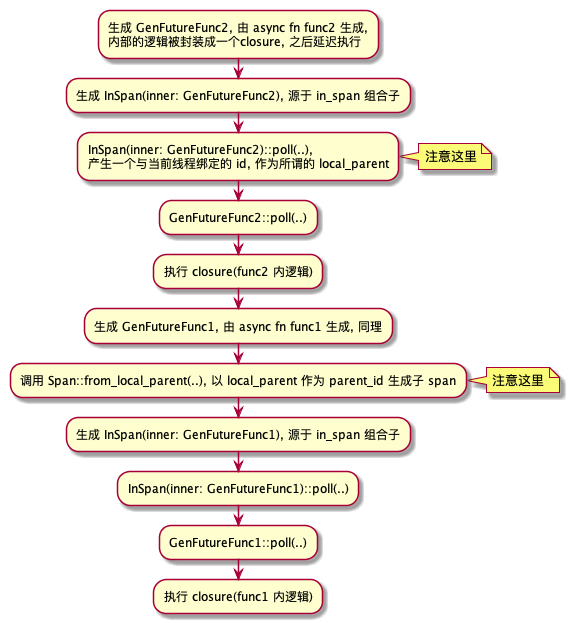
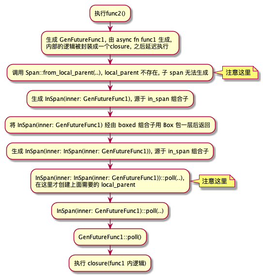

蚂蚁集团 ｜ Futures 0.1 和 0.3 兼容层的分析与应用
作者： Rachelint
背景
我们团队在 futures 0.1 版本时便在项目中对其进行了广泛使用，但 futures 发展到 0.3 加上 rust 引入了async/await 关键字后，明显具有了更高的可读性和可维护性，将 futures crate 进行版本升级是迟早要做的事情。但是如果一次性将项目中所有相关代码进行升级，工作量之大明显是难以接受的，稳定性方面也难以确保。因此我们决定利用 futures 0.3 提供的兼容层，对 futures 相关代码进行逐步升级。 在本文中，我想分享一下对兼容层实现的一些理解，还有在实践中得到的一些经验。文章大致分为三部分：
- 兼容层的大致使用方法
- 兼容层原理分析
- 实践经验
部分观点可能存在过于主观，或者存在错误等情况，欢迎指正。
1. Future01 和 Future03 的区别
首先看看两个版本中trait的声明 (在文中，futures 0.1 的 Future trait 称为 Future01，而 futures 0.3 的称为 Future03，下同)：
#![allow(unused)] fn main() { // 0.1 pub trait Future { type Item; type Error; fn poll(&mut self) -> Poll<Self::Item, Self::Error>; } // 0.3 pub trait Future { type Output; fn poll(self: Pin<&mut Self>, cx: &mut Context) -> Poll<Self::Output>; } }
可以看出，主要有三处不同：
- Future01 有两个关联类型 Item 和 Error，因为其中的 Poll 其实就是一个特殊的 Result 类型； 而 Future03 则只有一个关联类型 Output，而其中的 Poll 变为一个枚举类型；
- Future03 poll 中的参数之一从 Future01 中的 &mut self 变为了Pin<&mut Self>；
- Future03 poll 中多了一个参数cx: &mut Context； 这里主要简单介绍一下第2和第3点区别：
- Future03 为什么需要 Pin<&mut Self>？首先 Pin 只会限制实现了 !Unpin 的类型的移动，而 rust 只为一些如下特例实现了 !Unpin：
- PhantomPinned；
- 编译器为 async/await desugar 之后生成的 impl Future结构体；
很明显，Pin 主要是为了解决 async/await 自动生成 Future 的问题，那问题就是自引用，移动自引用结构体会造成指针失效。限于篇幅问题，这里先不再展开了，想更详细地了解关于 Pin 的知识，推荐阅读以下文章：
-
Future03 为什么需要 cx: &mut Context？现在 Context 当中还是只有一个 waker: &Waker 成员，新加入这个参数，按个人理解主要是用于改变按个人理解主要是用于改变 Waker（在01中起相同作用的是Notify) 设置和在 poll(..) 中对其进行获取的方式。
Future01 中 notify 的传入与获取大致流程：

Future 0.3 中 notify 的传入与获取大致流程：

很明显，实现 Future01 和 03 相互间的转换只要解决以后区别即可，而实际的实现大致上也是这么一个思路。
2. 使用方法
我们的目的是在项目中让 futures 0.1 和 0.3 相关内容并存，并根据需要实现它们之间的相互转换。
Cargo.toml 配置
- 首先要解决 futures 0.1 和 futures 0.3 两个 crate 都叫 futures 的问题。利用 cargo 提供的重命名功能即可，由于项目中暂时还是以 futures 0.1为主，因此把 futures 0.3 重命名为了 future03。
#![allow(unused)] fn main() { [dependencies] futures = "0.1" futures03 = { package = "futures", version = "0.3" } }
- 然后需要解决它们之间的相互转换的问题。这里可以启用 futures 0.3 提供的 compat feature，可以使用组合子的方式很方便解决相互转换的问题，在 Cargo.toml 中进行简单设置即可启用。
#![allow(unused)] fn main() { [dependencies] futures = "0.1" futures03 = { package = "futures", version = "0.3", features = ["compat"] } }
转换方法
那么具体要如何相互转换呢？ 这比较简单，利用compat组合子就可以直接实现了。
use futures::future::Ok; use futures03::compat::Future01CompatExt; use futures03::executor::block_on; fn main() { let fut01 = futures::future::ok::<i32, ()>(42); let fut03 = fut01.compat(); let res = block_on(fut03); println!("the fut03 res:{}", res.unwrap()); }
Future03 转 Future01。这就没那么简单了，能转 Future01 的 Future03 需要满足以下两个限制（文章后面会解析为什么）：
- 这个 Future03 需要是一个TryFuture。怎样的 Future03 才会是 TryFuture 呢？其实很简单，关联类型 Output 为 Result 就行了，看相关源码就很容易知道，会自动为这类 Future 实现 TryFuture：
#![allow(unused)] fn main() { impl<F, T, E> TryFuture for F where F: ?Sized + Future<Output = Result<T, E>>, { ... } }
- 这个 Future03 需要是 Unpin 的。Pin 解析起来比较复杂，这里就先不进行解析了，留到后面。 所以如果当前的 Future03 既不是 TryFuture，也不是 Unpin 的。那要怎么转 Future01 呢？还是利用组合子就可以解决了。
unit_error 组合子可以通过将 Future03<Ouput=T> 转换为Future03<Output=Result<T, ()>> 解决问题1；
而 boxed 组合子则可以通过将其放到堆区的方法使之满足 Unpin，从而解决问题2。
use futures03::future::{FutureExt, TryFutureExt}; use futures::Future; async fn make_fut03() -> i32 { 42 } fn main() { // 这是一个既不是TryFuture也不满足Unpin的Future let fut03 = make_fut03(); // let fut01 = fut03.compat(); 错误做法，编译时会报不满足trait限制的错 let fut01 = fut03.unit_error().boxed().compat(); let res = fut01.wait(); println!("the fut01 res:{}", res.unwrap()); }
3. 原理分析
Compat01As03 分析
接下来，按照以上思路简单分析一下在 futures03::compat 的具体实现，先介绍 Future01 到 Future03 的转换，主要逻辑为位于 compat/compat01as03.rs 中。
- 关于关联类型和 Poll 的转换：
#![allow(unused)] fn main() { #[derive(Debug)] #[must_use = "futures do nothing unless you `.await` or poll them"] pub struct Compat01As03<T> { pub(crate) inner: Spawn01<T>, } impl<Fut: Future01> Future03 for Compat01As03<Fut> { type Output = Result<Fut::Item, Fut::Error>; fn poll(mut self: Pin<&mut Self>, cx: &mut Context<'_>) -> task03::Poll<Self::Output> { poll_01_to_03(self.in_notify(cx, Future01::poll)) } } fn poll_01_to_03<T, E>(x: Result<Async01<T>, E>) -> task03::Poll<Result<T, E>> { match x? { Async01::Ready(t) => task03::Poll::Ready(Ok(t)), Async01::NotReady => task03::Poll::Pending, } } }
可以看到，Compat01As03
- 关于 Pin，直接为 Compat01As03 实现了 Unpin。个人看法，在这个源文件中没发现对 T 为 Unpin 的限制，或许是因为是当前如果要自行实现自引用结构，只能使用 unsafe 的缘故？
#![allow(unused)] fn main() { impl<T> Unpin for Compat01As03<T> {} }
- 将 Waker 转换为 NotifyHandle：
#![allow(unused)] fn main() { struct NotifyWaker(task03::Waker); #[allow(missing_debug_implementations)] #[derive(Clone)] struct WakerToHandle<'a>(&'a task03::Waker); impl From<WakerToHandle<'_>> for NotifyHandle01 { fn from(handle: WakerToHandle<'_>) -> Self { // 将waker放到堆区 let ptr = Box::new(NotifyWaker(handle.0.clone())); // 获取指针放到NotifyHandle中 unsafe { Self::new(Box::into_raw(ptr)) } } } // 将waker封装一层后为其实现Notify， // notify方法的实现其实就是直接调用waker.wake_by_ref() impl Notify01 for NotifyWaker { fn notify(&self, _: usize) { self.0.wake_by_ref(); } } // 在上一节所列的源码中，可以看到in_notify的身影，在这里看到： // in_notify的作用就是将Waker转化而成的NotifyHanle传入到Spawn::poll_fn_notify中， // 之后的过程就可以参考之前的流程图了 fn in_notify<R>(&mut self, cx: &mut Context<'_>, f: impl FnOnce(&mut T) -> R) -> R { let notify = &WakerToHandle(cx.waker()); self.inner.poll_fn_notify(notify, 0, f) } }
如上所述，主要实现思路还是比较简单的，将 Waker 放到堆区，然后获取其指针放到 NotifyHanle，然后将构建出的 NotifyHanle 传到 Spawn::poll_fn_notify 中。这样在调用 task.notify() 对内层 Futures01 进行唤醒时，就能转而调用外层 Compat01As03 的 waker.wake_by_ref()，对其进行唤醒，其他相关函数同理。
Compat 分析
Future03 到 01 的思路也是比较类似的，主要逻辑位于 compat/compat03as01.rs。
- 关于关联类型和Poll的转换：
#![allow(unused)] fn main() { #[derive(Debug, Clone, Copy)] #[must_use = "futures do nothing unless you `.await` or poll them"] pub struct Compat<T> { pub(crate) inner: T, } fn poll_03_to_01<T, E>(x: task03::Poll<Result<T, E>>) -> Result<Async01<T>, E> { match x? { task03::Poll::Ready(t) => Ok(Async01::Ready(t)), task03::Poll::Pending => Ok(Async01::NotReady), } } impl<Fut> Future01 for Compat<Fut> where // 注意这里，对Fut进行了限制，需要实现TryFuture03和Unpin Fut: TryFuture03 + Unpin, { type Item = Fut::Ok; type Error = Fut::Error; fn poll(&mut self) -> Poll01<Self::Item, Self::Error> { with_context(self, |inner, cx| poll_03_to_01(inner.try_poll(cx))) } } }
可以看到，Compat
- 关于 Pin，Future03 一般是由 async/await 自动生成而来的，而入本章第一节所示，该自动生成的 Future 是少数由rust 自动实现 !Unpin 的类型之一，所以这里进行了限制，只会有关联类型 T 满足 Unpin的Compat
实现Future01。
当想要将 async/await 自动生成的 Future03(大多数情况下) 转化为 Future01 时，必须先调用boxed 组合子 重建构建一个满足 Unpin的 新 Future03。
- 将 NotifyHandle 转换为 Waker：
#![allow(unused)] fn main() { #[derive(Clone)] struct Current(task01::Task); impl Current { fn new() -> Self { // 注意了, 这里是不是很眼熟, task::current()可以获取当前的Task结构， // 然后利用其构建Current结构，并转换为空指针在构建RawWaker时候传入， // 最后再经由vtable调用并传参到wake中，最终进行熟悉的task.notify()调用。 Self(task01::current()) } fn as_waker(&self) -> WakerRef<'_> { // 对指针解引用后获取再借用 unsafe fn ptr_to_current<'a>(ptr: *const ()) -> &'a Current { &*(ptr as *const Current) } // 将self转为void* fn current_to_ptr(current: &Current) -> *const () { current as *const Current as *const () } // vtable中需要实现的方法 //////////////////////////////// unsafe fn clone(ptr: *const ()) -> RawWaker { ... } unsafe fn drop(_: *const ()) {} unsafe fn wake(ptr: *const ()) { ptr_to_current(ptr).0.notify() } //////////////////////////////////////////////////////// // 将self转化为空指针，主要为了之后构建RawWaker时传入 let ptr = current_to_ptr(self); // 构建vtable let vtable = &RawWakerVTable::new(clone, wake, wake, drop); // 构建RawWaker，构建Waker WakerRef::new_unowned(std::mem::ManuallyDrop::new(unsafe { task03::Waker::from_raw(RawWaker::new(ptr, vtable)) })) } } }
在注释中已经说的较为详细了，具体的思路和 Compat01As03 是类似的，为了能在调用内层 Future03 waker.wake()/waker.wake_by_ref() 时，能转而调用到外层 Compat 的 task.notify()，从而对其进行唤醒，其他相关函数亦同理。
4. 一些实践经验
如何较好地进行局部升级
在这次的任务中，我需要对特定路径进行 futures 0.1 到 0.3 的升级，以适配想要加入到项目中的 crate。我想趁机在相关路径上引入 async/await，以提高代码可读性和可维护性。在实现的过程中，主要遇到了两个问题：
- 当前 Trait 不支持 async fn；
- 还需要保持旧的 runtime，因为如果升级 runtime 的话，影响太大(几乎要对整个项目所有相关的地方进行升级)；
对于 Trait 不支持 async fn 的问题，暂时可以通过使用第三方库 async-trait 来解决，使用方法很简单。其大致原理是，async_trait 宏将代码转换为一个返回 Pin<Box<dyn Future + Send + 'async>> 的同步方法。
use futures03::executor::block_on; use async_trait::async_trait; #[async_trait] trait TestTrait { async fn method1(&self); async fn method2(&self); } struct TestStruct; #[async_trait] impl TestTrait for TestStruct { async fn method1(&self) { println!("I am async method1"); } async fn method2(&self) { println!("I am async method2"); } } fn main() { let ts = TestStruct; block_on(ts.method1()); block_on(ts.method2()); }
那么如何有效地在保持旧版本 runtime 的情况下，将调用路径升级到 async/await 方式呢？个人比较推荐将最底层返回的 Future01 使用 compat 组合子转为 03，然后中间路径一直使用 async/await，再在最上层再次使用 compat 等组合子再次转为 Future01，放入到旧版 runtime 执行，示例如下：
use futures::Future; use futures03::compat::Future01CompatExt; use futures03::{FutureExt, TryFutureExt}; use futures_cpupool::CpuPool; type BoxedFuture<T> = Box<dyn Future<Item = T, Error = ()> + Send>; fn func1() -> BoxedFuture<i32> { Box::new(futures::future::ok(42)) } async fn func2() -> Result<i32, ()> { // convert to Future 0.3 let res1_compat_03 = func1().compat().await?; Ok(res1_compat_03 + 42) } async fn func3() -> Result<i32, ()> { let res2_03 = func2().await?; Ok(res2_03 + 42) } fn main() { let pool = CpuPool::new(4); let fut03 = func3(); // convert back to Future 0.1 let fut01 = fut03.boxed().compat(); // spawn to the old runtime let res = pool.spawn(fut01).wait(); println!("res:{}", res.unwrap()); }
返回 Future 的函数和 async fn 的区别
在 futures 0.1 中，由于没有 async fn 所以返回 Future 的函数是一种比较普遍的写法，例如：
#![allow(unused)] fn main() { type BoxedFuture<T> = Box<dyn Future<Item = T, Error = ()> + Send>; fn func1() -> BoxedFuture<i32> { Box::new(futures::future::ok(42)) } }
但这和 async fn 其实是有着微妙的区别，借用 minitrace-rust crate 来进行示例（这里返回的是 Future03，因为这是 01 和 03 共有的区别，用 01 来写这例子的话要多次来回 compat，代码非常绕）
use futures03::{Future as Future03, FutureExt}; use minitrace::{CollectArgs, FutureExt as MiniFutureExt, Span}; use std::pin::Pin; type BoxedFuture<T> = Pin<Box<dyn Future03<Output=T> + Send>>; async fn func1() -> i32 { 42 } // async fn func2() -> i32 { // func1().in_span(Span::from_local_parent("func1")).await // } fn func2() -> BoxedFuture<i32> { func1().in_span(Span::from_local_parent("func1")).boxed() } #[tokio::main] async fn main() { let (span, collector) = Span::root("func2"); let f = func2().in_span(span); tokio::spawn(f).await.unwrap(); let spans = collector.collect_with_args(CollectArgs::default().sync(true)); for span in spans { println!("span: event:{}, id:{}, pid:{}", span.event, span.id, span.parent_id); } } #当前结果： span: event:func2, id:1, pid:0 #注释掉func2，而去除async func2注释后结果： span: event:func1, id:65537, pid:1 span: event:func2, id:1, pid:0
可以看出，当把 async fn func2() -> i32 改成 func2() -> BoxedFuture
我刚开始遇到这个问题时也被搞晕了，后来用调试器进行跟踪，发现问题主要在于各层次 Future 生成和 poll() 执行顺序方面。
- async fn 情况下的大致执行顺序，GenFutureFuncx 表示 funcx 所生成或返回的 Future：

- 返回 Future 的 fn 情况下的可能执行顺序：

正如流程图中所示，导致最终结果差别的，正是 Span::from_local_parent() 和 最外层 InSpan::poll() 执行的先后顺序不同（在上述流程图中对这两个步骤进行了相关标注）。
因为经过在 InSpan::poll() 中会将进行一些操作，产生一个与当前线程绑定的 span_id 作为所谓的local_parent，而在返回 Future 的情况下，Span::from_local_parent() 先于 最外层 InSpan::poll() 执行从而导致了前者的执行失败，因为 local_parent 在其执行时根本还没被构建。
这个差别比较隐蔽，一般也不会造成影响，毕竟 Future::poll() 的执行顺序还是正确的，但在以上例子中还是使执行结果产生了差异，还是值得稍微知道一下的。
5. 总结
以上为本人对 futures 兼容层的一些理解和经验，之前由于要进行这方面的工作，看了比较多的相关资料，但一直没空进行梳理。这次重新看了一下并进行总结，感觉还是收获颇大的。